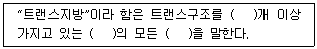
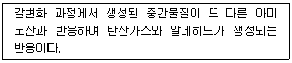

식품기사 (2011-08-21 기출문제)
1과목: 식품위생학
1. 식품 위생법상의 용어 정의가 틀린 것은?
- “화학적 합성품”이라 함은 화학적 수단으로 원소 또는 화합물에 분해반응 외의 화학반응을 일으켜 얻은 물질
- “식중독”이라 함은 식품의 섭취로 인하여 인체에 유해한 미생물만에 의하여 발생한 것
- “표시”라 함은 식품, 식품첨가물, 기구 또는 용기ㆍ포장에 적는 문자, 숫자 또는 도형
- “식품위생”이라 함은 식품, 식품첨가물, 기구 또는 용기 포장을 대상으로 하는 음식에 관한 위생
(정답률: 87%)

2. 미생물에 의한 단백질 변질시 생성되는 물질이 아닌 것은?
- 암모니아
- 아민류
- 페놀
- 젖산
(정답률: 80%)
3. LD50 으로 독성을 표현하는 것은?
- 급성독성
- 만성독성
- 발암성
- 최기형성
(정답률: 93%)
4. 아질산염과 식품중의 제2급 아민이 산성에서 반응하여 생성되는 발암성 물질은?
- N-nitrosamine
- histamine
- trimethylamine
- diphenylamine
(정답률: 85%)
5. 식품에서 생성되는 Acrylamide에 의한 위험을 낮추기 위한 방법으로 잘못된 것은?
- 감자는 8℃ 이상의 음지에서 보관하고 냉장고에 보관하지 않는다.
- 튀김의 온도는 160℃ 이상으로 하고, 오븐의 경우는 200℃ 이상으로 조절한다.
- 빵이나 시리얼 등의 곡류 제품은 갈색으로 변하지 않도록 조리하고, 조리 후 갈색으로 변한 부분은 제거한다.
- 가정에서 생감자를 튀길 경우 물과 식초의 혼합물(1:1 비율)에 15분 침지한다.
(정답률: 85%)
6. 내분비계 장애물질에 대한 설명으로 틀린 것은?
- 체내에 항상성유지와 발달과정을 조절하는 생체내 호르몬의 작용을 간섭하는 내인성 물질이다.
- 일반적으로 합성 화학물질로서 물질의 종류에 따라 교란시키는 호르몬의 종류 및 교란방법이 다르다.
- 쉽게 분해되지 않고 안정하여 환경 혹은 생체내에 지속적으로 수년간 잔류하기도 한다.
- 수용체 결합과정에서 호르몬 모방작용, 차단작용, 촉발작용, 간접영향작용 등을 한다.
(정답률: 82%)
7. 다음 중 살균제가 아닌 것은?
- 표백분 (bleaching powder)
- 차아염소산 나트륨 (sodium hypochlorite)
- 고도표백분 (calcium hypochlorite)
- 안식향산 (benxoic acid)
(정답률: 82%)
8. 장티푸스에 대한 설명으로 옳은 것은?
- 병원균은 Salmonella paratyphi이다.
- 잠복기는 2~3일 전후이다.
- 쌀뜨물과 같은 심한 설사를 한다.
- 완치된 후에도 보균하여 균을 배출하는 경우도 있다.
(정답률: 75%)
9. 석탄산을 소독제로 사용할 때 일반적으로 몇 % 수용액으로 하여 이용하는가?
- 1 ~ 2%
- 3 ~ 5%
- 6 ~ 8%
- 8 ~ 10%
(정답률: 77%)
10. HACCP 용어의 설명으로 옳지 않은 것은?
- 모니터링(Monitoring) - CCP 또는 그 기준에 대하여 정확한 기록을 얻도록 계획된 일련의 검사, 측정 및 관찰하는 행위
- 중요관리점(CCP) - 중점적인 감시를 요구하지만 위해제어조치는 해당하지 않음
- 위해(Hazard) - 소비자의 건강 장애를 일으킬 우려가 있는 생물적, 화학적, 물리적인 요소
- 한계기준(Critical Limit) - 위해요소 관리가 허용범위 이내로 이루어지고 있는지의 판단 기준
(정답률: 86%)
11. 식용 얼음의 규격 기준에 있어서 1 mL당 일반생균수는?
- 음성
- 50이하
- 3000이하
- 100이하
(정답률: 65%)
12. 경구감염병과 세균성 식중독의 차이점을 올바르게 설명한 것은?
- 경구감염병은 세균성 식중독에 비하여 다량의 미생물 균체가 있어야 감염이 가능하다.
- 경구감염병은 세균성 식중독에 비하여 2차 감염이 거의 일어나지 않는다.
- 경구감염병은 세균성 식중독에 비하여 잠복기가 길다.
- 경구감염병은 세균성 식중독에 비하여 면역성이 없다.
(정답률: 77%)
13. 알레르기(allergy) 식중독의 원인 물질은?
- arginine
- histamine
- alanine
- lysine
(정답률: 90%)
14. 다음 중 기생충과 숙주의 연결이 잘못된 것은?
- 폐디스토마 - 게
- 요꼬가와흡충 - 은어
- 간디스토마 - 잉어
- 갈고리촌충 - 송어
(정답률: 87%)
15. 사람의 1일 섭취어용량(acceptable daily intake, ADI)을 계산하는 식은?
- ADI = MNFL × 1/100 × 국민의 평균체중(mg/kg)
- ADI = MNFL × 1/10 × 성인남자 평균체중(mg/kg)
- ADI = MNFL × 1/10 × 국민의 평균체중(mg/kg)
- ADI = MNFL × 1/100 × 성인남자 평균체중(mg/kg)
(정답률: 88%)
16. 식품등의 표시기준상의 트랜스지방 정의를 나타낸 것으로 ( )안에 들어 갈 용어를 순서대로 알맞게 나열한 것은?

- 1 - 비공액형 - 불포화지방
- 1 - 비공액형 - 포화지방
- 2 - 공액형 - 불포화지방
- 2 - 공액형 - 포화지방
(정답률: 87%)
17. 비브리오(Vibrio vulnifrcus) 패혈증을 설명한 내용 중 틀린 것은?
- 근해산 어류를 섭취하는 경우 발생할 수 있다.
- 피부의 상처를 통하여 감염되어 염증을 일으킨다.
- 간경화증과 같은 기초질환이 있는 사람에게 쉽게 감염된다.
- 염분 농도가 5%이상의 해수에서 가장 많이 발견된다.
(정답률: 58%)
18. 방사성 물질로 오염된 식품이 인체 내에 들어갈 경우 그의 위험성을 판단하는데 직접적인 영향이 없는 인자는?
- 방사선의 종류와 에너지의 크기
- 식품 중의 지방질 함량
- 방사능의 물리학적 및 생물학적 반감기
- 혈액 내에 흡수되는 속도
(정답률: 91%)
19. 식중독 증상에서 cyanosis현상이 나타나는 어패류는?
- 섭조개, 대합
- 바지락
- 복어
- 독꼬치
(정답률: 73%)
20. 다음 산화방지제 중 수용성인 것은?
- propyl gallate
- erythorbic acid
- BHT
- BHA
(정답률: 71%)
2과목: 식품화학
21. 양파를 가열 조리할 경우 자극적인 방향과 맛이 사라지고 단맛을 나타내는 원인은?
- propyl allyl disulfide가 가열로 분해되어 propyl mercaptan으로 변했기 때문이다.
- quercetin이 가열에 의해 mercaptan으로 변했기 때문이다.
- 섬유질이 amylase 효소의 분해를 받아 포도당을 생성했기 때문이다.
- carotene이 가열에 의해 단맛을 내는 lycopene으로 변화되었기 때문이다.
(정답률: 88%)
22. 밀단백질인 글루텐의 구성성분은?
- 글리아딘(gliadin)과 프로라민(prolamin)
- 글리아딘(gliadin)과 글루테닌(glutenin)
- 글루타민(glutamin)과 글루테닌(glutenin)
- 글루타민(glutamin)과 프로라민(prolamin)
(정답률: 75%)
23. 식품의 텍스처 특성에 대한 설명이 올바른 것은?
- 저작성은 '연하다, 질기다'라고 표현되는 특성이다.
- 부착성은 '바삭바삭하다, 끈적끈적하다'라고 표현되는 특성이다.
- 응집성은 '기름지다, 미끈미끈하다'라고 표현되는 특성이다.
- 견고성은 '부스러지다, 깨지다'라고 표현되는 특성이다.
(정답률: 62%)
24. 대두에 함유된 isoflavone이 아닌 것은?
- glycitein
- daidzein
- hordein
- genistein
(정답률: 66%)
25. 과일에 함유된 펙틴 성분을 가공처리 할 때 펙틴 성분의 특성과 변화를 잘못 설명하고 있는 것은?
- 불용성 프토토펙틴은 끓는 물에서 가열 처리에 의하여 수용성 펙틴으로 변한다.
- 펙틴 분자속의 카르복실기 일부가 카르복실메칠기로 변한 상태에서 설탕과 유기산이 있다면 겔을 형성할 수 있다.
- 저메톡실펙틴(low methoxyl pectin)의 경우 칼슘이온이 존재한다면 펙틴겔이 잘 만들어진다.
- 고메톡실펙틴(high methoxyl pectin)의 경우 칼륨을 첨가한다면 펙틴겔이 잘 만들어진다.
(정답률: 67%)
26. 튀김공정 중 기름에서 일어나는 주요 변화가 아닌 것은?
- 중합
- 유리지방산 감소
- 에스터 결합의 분해
- 열산화
(정답률: 82%)
27. 대두 단백질 중 단백질 분해효소인 trypsin의 작용을 억제하는 성질을 가진 단백질은 주로 어느 것인가?
- albumin
- globulin
- glutelin
- prolamin
(정답률: 66%)
28. 다음 감칠맛을 나타내는 화합물중 향미증진작용의 크기를 큰 것부터 바르게 나열한 것은?
- GMP > IMP > XMP
- GMP > XMP > IMP
- IMP > GMP > XMP
- IMP > XMP > GMP
(정답률: 67%)
29. 설탕의 성질이 아닌 것은?
- Fehling 용액을 환원하는 성질이 없다.
- 묽은 산 용액에서도 쉽게 가수분해된다.
- 가수분해가 되어도 편광의 광회전도가 변하지 않는다.
- 효모에 의하여 쉽게 발효된다.
(정답률: 65%)
30. 산패(rancidity)가 가장 빠른 지방산은?
- arachidonic acid
- linoleic acid
- stearic acid
- palmitic acid
(정답률: 77%)
31. 맥주의 쓴맛을 내는 대표적인 원인 물질은?
- caffeine
- theobromine
- limonin
- humulone
(정답률: 77%)
32. 다음 중 셀러리의 독특한 주요 향기성분은?
- limonene
- sedanolide
- methyl cinnamate
- 2,6-nonadienal
(정답률: 80%)
33. 다음 중 우리 몸에 흡수된 단백질을 분해하는 효소의 작용순서로 옳은 것은?
- endopeptidase > exopeptidase > dipeptidase
- exopeptidase > endopeptidase > dipeptidase
- endopeptidase > dipeptidase > exopeptidase
- exopeptidase > dipeptidase > endopeptidase
(정답률: 75%)
34. 전분의 가수분해 과정으로 옳은 것은?
- starch - oligosaccharide - maltose - dextrin - glucose
- starch - dextrin - oligosaccharide - maltose - glucose
- starch - dextrin - glucose - maltose - oligosaccharide
- starch - maltose - oligosaccharide - glucose - dextrin
(정답률: 83%)
35. 식품 레올로지와 관련 없는 것은?
- 식품 원료, 중간 식품 및 최종 제품의 기계적 품질 관리
- 식품의 구조 및 가공 중 물리적 변화 측정
- 식품에 가해지는 힘에 대한 변형에 관한 학문
- 식품의 칼로리 계산
(정답률: 81%)
36. 혈청 콜레스테롤을 낮출 수 있는 성분이 아닌 것은?
- HDL
- lignin
- 필수지방산
- sitosterol
(정답률: 61%)
37. 펙트산(pectic acid)의 단위 물질은?
- galactose
- galacturonic acid
- pannose
- mannuroinc acid
(정답률: 75%)
38. NaOH의 분자량이 40일 때 NaOH 30g의 몰수는?
- 0.65
- 10
- 1.33
- 0.75
(정답률: 79%)
39. 뉴톤 유체에 대한 다음 설명 중 맞는 것은?
- 전단속도에 따라 전단응력이 비례적으로 증가한다.
- 물, 당류 용액, 전분용액 등이 뉴톤 유체의 흐름을 나타낸다.
- 뉴톤 유체의 점도는 온도에 따라 일정하다.
- 유동곡선의 증축 절편에 따라 여러 종류로 분류된다.
(정답률: 62%)
40. 다음은 어떤 종류의 반응에서 일어나는 현상인가?

- 아스코르빈산 산화반응
- 캐러멜 반응
- 스트렉커 반응
- 딜스알더(Diels-Alder)반응
(정답률: 77%)
3과목: 식품가공학
41. 난백분(흰자위가루)을 제조시 그냥 건조하면 용해도 저하와 갈변 현상이 나타나므로 이를 방지하기 위해 건조전에 처리하는 것은?
- 원심분리
- 분무건조
- 발효
- 동결
(정답률: 42%)
42. 다음 중 온탕법에 의한 감의 탈삽법에서 유지해야 할 가장 알맞은 소온은?
- 10℃
- 40℃
- 80℃
- 100℃
(정답률: 70%)
43. 피단(皮)蛋) 제조에 있어 관여되지 않는 것은?
- 침투작용
- 응고작용
- 훈연작용
- 발효작용
(정답률: 78%)
44. 가열 살균에서 일어나는 열전달관계를 잘못 설명한 것은?
- 통조림의 냉점(cold point)은 대류(heat convection)가 전도(heat conduction)보다 높은 위치에 나타난다.
- 열전달 속도는 대류(heat convection)가 전도(heat conduction)보다 빠르다.
- 전도는 통상 액즙이 거의 없는 식품이나 고체류의 식품에서 열이 전달되는 방식을 의미한다.
- 복사(heat radiation) 방식은 통조림의 경우 거의 쓰이지 않는다.
(정답률: 48%)
45. 통조림의 살균 조건과 관계가 없는 것은?
- 원료의 신선도
- 내용물의 상태
- 관의 크기와 모양
- 진공도와 탈기정도
(정답률: 32%)
46. 두부의 응고제 중 탄력성과 보수성이 크며, 수율이 높은 것은?
- 간수
- 염화칼슘
- 황산칼슘
- 염화암모늄
(정답률: 69%)
47. 콩단백질의 특성에 대한 설명으로 틀린 것은?
- 콩단백질은 pH가 높으면 추출액에서 침전시킬 수 있다.
- 콩단백질은 pH를 높게 하면 물보다 추출률이 약간 높아진다.
- 콩단백질은 물로 추출하면 90%가 녹아 나온다.
- 콩단백질은 pH4.3 근처에서 추출률이 가장 높다.
(정답률: 51%)
48. 금속평판으로부터의 열플럭스의 속도는 1000W/m2이다. 평판의 표면온도는 120℃이며, 주위온도는 20℃이다. 대류열전달계수는?
- 50W/m2ㆍ℃
- 30W/m2ㆍ℃
- 10W/m2ㆍ℃
- 5W/m2ㆍ℃
(정답률: 57%)
49. 열전도도가 0.7W/mㆍK인 벽돌로 된 두께 15cm의 외부벽과 208W/mㆍK의 열전도도를 갖는 1.5mm의 알루미늄판으로 된 창고가 있을 때, 이 창고의 U(총괄전열계수)값은? (단, 창고 안팎의 표면 열전달계수는 각각 12와 25W/m2ㆍK이다.)
- 0.45W/m2ㆍK
- 1.42W/m2ㆍK
- 1.96W/m2ㆍK
- 2.97W/m2ㆍK
(정답률: 35%)
50. 치즈의 제조공정의 순서가 맞는 것은?
- 스타터접종 ⟶ 레닛첨가 ⟶ 커드절단 ⟶ 커드가온 ⟶ 가염
- 레닛첨가 ⟶ 스타터접종 ⟶ 가염 ⟶ 커드가온 ⟶ 커드절단
- 스타터접종 ⟶ 레닛첨가 ⟶ 커드가온 ⟶ 커드절단 ⟶ 가염
- 레닛첨가 ⟶ 스타터접종 ⟶ 커드가온 ⟶ 커드절단 ⟶ 가염
(정답률: 50%)
51. 장류제조시 사용되는 코지 제조에 대한 설명으로 틀린 것은?
- 헤치기공정은 신선한 공기의 공급과 품온 상승을 방지하기 위한 공정이다.
- 발효가 왕성해질수록 품온이 상승한다.
- 코지 곰팡이의 발육이 왕성하면 품온이 상승하지만 이산화탄소의 발생은 감소한다.
- 종국과 코지의 원료를 혼합하는 섞기과정이 끝났을 때 품온은 30~32℃ 유지하는 것이 좋다.
(정답률: 74%)
52. 경화유 제조에 사용되는 수소 첨가용 촉매는?
- Cu
- Ni
- Mg
- Fe
(정답률: 86%)
53. 건제품과 그 특성의 연결이 틀린 것은?
- 동건품 - 물에 담가 얼음과 함께 얼린 것
- 자건품 - 원료 어패류를 삶아서 말린 것
- 염건품 - 식염에 절인 후 건조시킨 것
- 소건품 - 원료 수산물을 날것 그대로 말린 것
(정답률: 85%)
54. 소시지를 만들 때 고기에 향신료 및 조미료를 첨가하여 혼합하는 기계는?
- silent cutter
- meat chopper
- meat stuffer
- packer
(정답률: 74%)
55. 요구르트 제조시 0.2%정도의 한천이나 젤라틴을 사용하는 이유는?
- 우유 단백질인 casein의 열 안전성 증대를 위하여
- 유청(Whey)이 분리되는 것을 방지하고, 커드(curd)를 굳히기 위하여
- 감미와 풍미 향상을 위하여
- 유산균 발효시 영양성분 공급을 위하여
(정답률: 83%)
56. 엿을 만들 때 이용하는 맥아는 싹의 길이가 보리알의 어느 정도 자란 것이 가장 좋은가?
- 보리알의 1/3~3/4
- 보리알의 1~1.5배
- 보리알의 1.5~2배
- 보리알의 2~2.5배
(정답률: 72%)
57. 질소치환포장을 통해 얻을 수 있는 이점이 아닌 것은?
- 호기성균에 의한 변패를 막을 수 있다.
- 갈변반응을 억제할 수 있다.
- 호흡작용이 증가하여 영양소를 축적할 수 있다.
- 지방의 산배를 억제할 수 있다.
(정답률: 86%)
58. 육류 가공시 색소 고정에 사용되지 않는 첨가물은?
- 질산염
- 아질산염
- 아스크로브산
- 인산염
(정답률: 55%)
59. 플라스틱 포장재료의 물성 특징에 대한 설명으로 틀린 것은?
- 폴리에틸렌필름(polyethylene, PE) : 기체투과도가 낮아 산화방지 용도로 사용된다.
- 폴리에스테르필름(polyester, PET) : 내열성이 강하여 레토르트용으로 사용된다.
- 폴리프로필렌필름(polypropylene, PP) : 인쇄적성이 좋기 때문에 표면층 필름으로 사용된다.
- 폴리스티렌필름(polystyrene, PS) : 내수성이 우수하며 고무성 물질을 넣은 내충격성 폴리스티렌(HIPS)은 유산균음료 포장에 사용된다.
(정답률: 42%)
60. 고기의 해동강직에 대한 설명으로 틀린 것은?
- 골격으로부터 분리되어 자유수축이 가능한 근육은 60~80%까지의 수축을 보인다.
- 가죽처럼 질기고 다즙성이 떨어지는 저품질의 고기를 얻게 된다.
- 해동강직을 방지하기 위해서는 사후강직이 완료된 후에 냉동해야 한다.
- 냉동 및 해동에 의하여 고기의 칼슘결합력이 높아져서 근육수축을 촉진하기 때문에 발생한다.
(정답률: 69%)
4과목: 식품미생물학
61. 다음 세포의 구조 중 표면에 달라붙거나 미생물끼리 부착될 수 있도록 하는 것은?
- 편모(flagella)
- 선모(pilus)
- 리보솜(ribosome)
- 핵부위(nucleoid)
(정답률: 75%)
62. 최초세균수 5 CFU, 한 세대가 3시간인 세균이 있다. 30시간 후의 총균수는?
- 5× 330
- 5× 210
- 3× 530
- 3× 210
(정답률: 87%)
63. EMP(Embden-Meyerhof-Parnas)경로에 대한 설명 중 맞지 않는 것은?
- 포도당이 혐기적으로 분해되어 피루빈산을 생성하는 과정을 말한다.
- 알코올발효나 젖산발효, 해당작용 등이 이 경로를 통하여 이루어진다.
- 대사반응 초기에 생성된 5탄당이 이 경로의 주요 역할을 한다.
- 본 경로를 통하여 4분자의 ATP가 합성되고 2분자의 ATP가 소비된다.
(정답률: 58%)
64. 세균의 균수를 측정하는 방법에 대한 설명으로 틀린 것은?
- 총균수를 측정하기 위해서는 Thoma의 철구계수기(Haematometer)가 사용된다.
- 그람염색법으로 양성균과 음성균을 구별할 수 있다.
- 비교적 미생물 농도가 낮은 시료는 MPN법을 이용한다.
- 일반적으로 생균수는 평판 배양법으로 측정할 수 있다.
(정답률: 51%)
65. 라이소자임(lysozyme)과 페니실린은 세균의 어느 부분에 작용하는가?
- 세포막
- 세포벽
- 협막
- 점질물
(정답률: 70%)
66. TSI 사면배지에서 균을 배양하였더니 배지에 균열이 발생하였다. 이로부터 알 수 있는 사실은?
- 용혈작용 발생
- 응집현상 발생
- 암모니아 발생
- 가스 발생
(정답률: 58%)
67. 박테리오파지(Bacteriophage)가 감염하여 증식할 수 없는 균은?
- Bacillus subtilis
- Aspergillus oryzae
- Escherichia coli
- Clostridium perfringens
(정답률: 66%)
68. 세균의 선택배양 배지와 대상 세균이 잘못 연결된 것은?
- MSA 한천배지 - 살모넬라
- MYP 한천배지 - 바실러스 세레우스
- Oxpord 한천배지 - 리스테리아 모노사이토제네스
- TCBS 한천배지 - 장염비브리오
(정답률: 41%)
69. 산막효모의 특징이 아닌 것은?
- 산소를 요구한다.
- 산화력이 약하다.
- 액의 표면에서 발육한다.
- 피막을 형성한다.
(정답률: 72%)
70. 과일이나 채소를 부패시킬 뿐만 아니라 보리나 옥수수와 같은 곡류에서 zearalenone이나 fumonisin등의 독소를 생산하는 곰팡이는?
- Aspergillus 속
- Fusarium 속
- Penicillium 속
- Cladosporium 속
(정답률: 75%)
71. 셀룰로오스(cellulose)를 가수분해할 수 있는 효소는?
- α-glucosidase
- β-glucosidase
- transglucosidase
- α-amylase
(정답률: 52%)
72. 효모의 주요 분류와 그에 속하는 효모명이 바르게 짝지어진 것은?
- 유포자 효모 - Candida
- 자낭포자 효모 - Torulopsis
- 담자포자 효모 - Saccharomyces
- 사출포자 효모 - Bullera
(정답률: 35%)
73. 장내세균들 간에 항생제 내성 유전자가 전파되는 주된 원인은?
- 형질도입(transduction)
- 유전자 재조합(genetic recombination)
- 접합(conjugation)
- 선택적 전달(selective transmission)
(정답률: 49%)
74. 효모에 관한 다음 설명 중 틀린 것은?
- 진핵세포구조를 가진 고등 미생물로 출아법 또는 분열법으로 증식한다.
- 알코올 발효능이 강한 종류가 많아 양조, 제빵 등에 사용된다.
- 당질 원료 이외에는 탄소원으로 이용할 수 없고 균체 자체의 중요도는 낮다.
- 양조나 식품에 유해한 효모나 인체에 병원성을 갖는 효모도 있다.
(정답률: 77%)
75. Saccharomyces cerevisiae를 포도 착즙액에 접종하고 혐기적으로 배양할 때 주로 생성되는 물질은?
- 초산, 물
- 젖선, 이산화탄소
- 에탄올, 젖산
- 이산화탄소, 에탄올
(정답률: 74%)
76. 다음 중 그람염색시 자주색을 나타내는 균은?
- 리스테리아균
- 켐필로박터균
- 살모넬라균
- 장염비브리오균
(정답률: 63%)
77. ergotoxin을 생성하는 곰팡이는?
- Aspergillus parastiticus
- Claviceps purpurea
- Aspergillus ochraceus
- Fusarium roseum
(정답률: 40%)
78. 김치 숙성에 관련된 균이 아닌 것은?
- Leuconostoc mesenteroides
- Pediococcus cerevisiae
- Lactobacillus plantarum
- Bacillus subtilis
(정답률: 81%)
79. 영양요구에 의한 미생물의 분류상 같은 분류에 속하지 않는 것은?
- Nitrosomonas 속
- Thiobacillus 속
- Rhizobium 속
- 녹색황세균
(정답률: 39%)
80. 자율복제기능을 가지며, 유전자 재조합에서 목적 DNA 조각을 숙주세포의 DNA 내로 도입시키기 위하여 사용하는 매개체는?
- 프라이머(primer)
- 백터(vector)
- 마커(marker)
- 중합효소(polymerase)
(정답률: 71%)
5과목: 생화학 및 발효학
81. provitamin과 vitamin과의 연결이 틀린 것은?
- β-carotene - 비타민 A
- tryptophan - niacin
- glucose - biotin
- ergosterol - 비타민 D2
(정답률: 81%)
82. DNA로부터 단백질 합성까지의 과정에서 t-RNA의 역할에 대한 설명으로 옳은 것은?
- m-RNA 주형에 따라 아미노산을 순서대로 결합시키기 위해 아미노산을 운반하는 역할을 한다.
- 핵안에 존재하는 DNA 정보를 읽어 세포질로 나오는 역할을 한다.
- 아미노산을 연결하여 protein을 직접 합성하는 장소를 제공한다.
- 합성된 protein을 수식하는 기능을 담당한다.
(정답률: 84%)
83. 정미성 핵산의 제조방법이 아닌 것은?
- RNA 분해법
- DNA 분해법
- 생화학적 변이주를 이용하는 방법
- Purine nucleotide 합성의 중간체를 축적시켜 화학적으로 합성하는 방법
(정답률: 70%)
84. Cori cycle에서 피루브산이 아미노기(NH3) 전이를 받아 생성되는 아미노산은?
- 프롤린
- 트립토판
- 알라닌
- 리신
(정답률: 58%)
85. 다음 중 셀로바이오스(cellobiose)를 구성단위로 하는 것은?
- 전분
- 글리코겐
- 이눌린
- 섬유소
(정답률: 74%)
86. 1몰의 포도당으로 생성하는 알코올의 이론적인 수득량을 %로 나타낸다면?
- 약 51.1%
- 약 56.0%
- 약 62.4%
- 약 75.0%
(정답률: 75%)
87. 다음 중 DNA와 RNA의 차이에 해당하는 성분은?
- cytosine
- deoxyribose
- guanine
- adenine
(정답률: 81%)
88. 단클론 항체(monoclonal antibody)는 다음 중 어떤 세포내 유전적 조합 기술을 이용하여 생산한 것인가?
- 형질전환(transformation)
- 세포융합(cell fusion)
- 형질도입(transduction)
- 접합(conjugation)
(정답률: 43%)
89. 전자전달계에 관여하지 않는 것은?
- CoA
- CoQ
- FMN
- NAD
(정답률: 55%)
90. allosteric 효소에 대한 설명으로 틀린 것은?
- 효소분자에서 촉매부위와 조절부위는 대부분 다른 subunit에 존재한다.
- 촉진인자가 첨가되면 효소는 기질과 복합체를 형성할 수 있다.
- 조절인자는 효소활성을 저해 또는 촉진시킨다.
- Michaelis-Menten식의 성질을 갖는다.
(정답률: 59%)
91. 다음 단당류 중 ketose이면서 hexose(6탄당)인 것은?
- glucose
- ribulose
- fructose
- arabinose
(정답률: 76%)
92. invertase에 대한 설명으로 틀린 것은?
- 활성 측정은 sucrose에 결합되는 산화력을 정량한다.
- sucrase 또는 saccharase라고도 한다.
- 가수분해와 fructose의 전달반응을 촉매한다.
- sucrose를 다량 함유한 식품에 첨가하면 결정 석출을 막을 수 있다.
(정답률: 43%)
93. 진핵세포의 DNA와 결합하고 있는 염기성 단백질은?
- albumin
- globulin
- histone
- histamine
(정답률: 71%)
94. 퓨린 분해대사의 최종 생성물은?
- uric acid
- orotic acid
- allantoic acid
- urea
(정답률: 81%)
95. 한 분자의 피루브산이 TCA회로를 거쳐 완전분해하면 얻을 수 있는 ATP의 수는? (단, NADH, FADH2의 경우도 ATP를 얻은 것으로 한다.)
- 15
- 30
- 36
- 38
(정답률: 33%)
96. DNA를 구성하고 있는 성분들과 결합이 맞게 연결된 것은?
- 질소염기 - 디옥시리보오스 - 인산에스테르 결합
- 질소염기 - 리보오스 - 인산에스테르 결합
- 질소염기 - 디옥시리보오스 - 아미드 결합
- 질소염기 - 디옥시리보오스 - 글리코시드 결합
(정답률: 81%)
97. 해당과정(glycolysis)과 당신생합성(gluconeogenesis)의 양쪽 반응 모두에 관여하는 효소는?
- 3-phosphoglycerate kinase
- glucose 6-phosphatase
- hexokinase
- phosphofructokinase-1
(정답률: 34%)
98. 단백질의 아미노산 배열은 DNA상의 염기배열에 의하여 결정되는데 이러한 유전자(DNA)의 암호(code)는 몇 개의 염기배열에 의하여 구성되는가?
- 1개
- 2개
- 3개
- 4개
(정답률: 70%)
99. glucose oxidaase의 이용성과 관계없는 것은?
- 포도당의 제거
- 산소의 제거
- 포도당의 정량
- 식품의 고미질 제거
(정답률: 69%)
100. 해당과정(glycolysis, EMP)에 관여하는 효소의 보효소로 작용하는 비타민은?
- riboflavin
- pantothenic acid
- niacin
- biotin
(정답률: 56%)
“식중독”이라 함은 식품의 섭취로 인하여 인체에 유해한 미생물만에 의하여 발생한 것이 맞습니다. 즉, 식품에 있는 유해한 미생물이 인체에 들어가서 발생하는 질병을 말합니다.
“표시”라 함은 식품, 식품첨가물, 기구 또는 용기ㆍ포장에 적는 문자, 숫자 또는 도형을 말합니다. 이는 소비자가 제품을 선택할 때 필요한 정보를 제공하기 위한 것입니다.
“식품위생”이라 함은 식품, 식품첨가물, 기구 또는 용기 포장을 대상으로 하는 음식에 관한 위생을 말합니다. 이는 식품을 제조, 가공, 보관, 운반, 판매하는 과정에서 발생할 수 있는 위생적인 문제를 예방하고 관리하기 위한 것입니다.